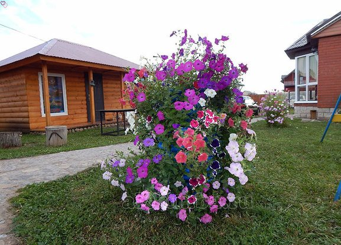
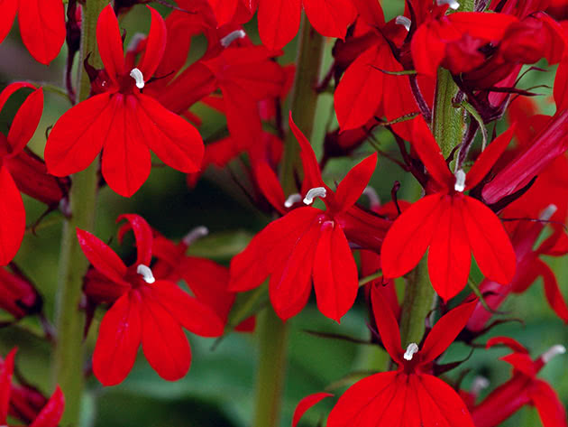
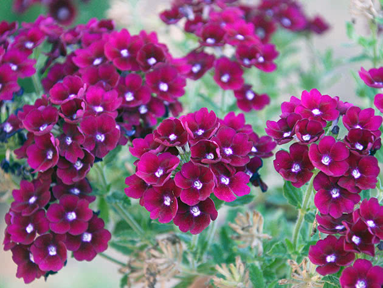
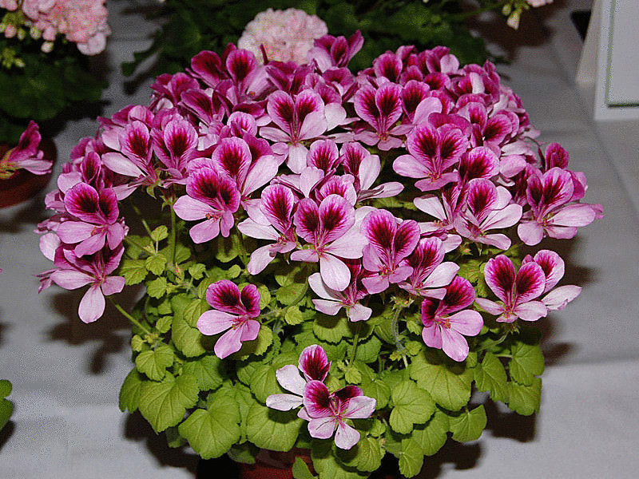
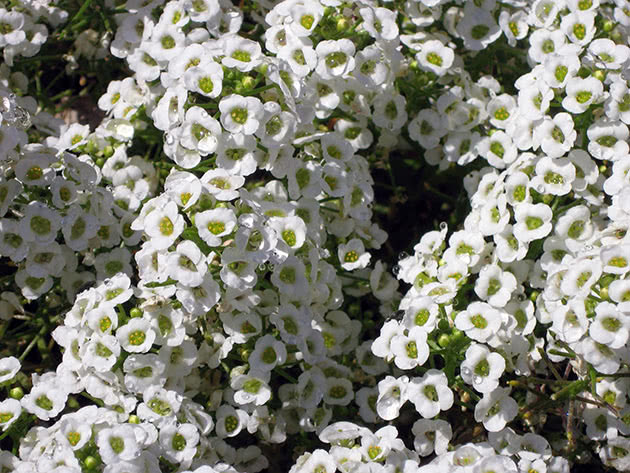

Однолетники в моем саду
Как я люблю лето!!! Как я жду его!!! Как хочется быстрей в сад,
навести красоту на клумбах. В этом году насажала разных однолетников.
Знакомьтесь: эти однолетники цветут летом у меня на клумбе,
в вазонах и в подвесных кашпо:
- Петуния

- Лобелия

- Вербена

- Пеларгония

- Алиссум

Другие прекрасные однолетники:
Такие еще не сажала, но у меня еще все впереди!
- Виола
- Бегония
- Львиный зев
- Бальзамин
- Эустома
А здесь я черпаю вдохновение для оформления сада:
об однолетниках в моем саду